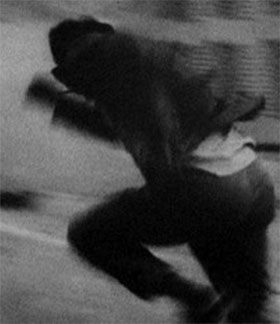

Retour à la rue d’Eole (Six peintures populaires)
Returning to Aeolus Street (Six popular paintings)

Maria Kourkouta – France / Greece 2013 – 14 min.
B+K+S+T : Maria Kourkouta – M : Manos Hadjidakis – V: Light Cone
16mm – No Dialogues
Insignificant fragments, reworked, reassembled, slowed down, put in loops, of Greek popular movies of the 50s and 60s. These fragments are accompanied by short extracts of poems written by Greek authors and by Manos Hadjidakis'music. It is a found footage movie, a collage which evokes a return journey to contemporary Greece, in the center of Athens. – Light Cone
Tuesday 14/10 10:30 p.m. Werkstattkino
Maria Kourkouta, born in 1982 in Greece. She studied anthropology and filmmaking theory in Greece and France. She has made films for nearly eight years and is also a member of independent cinema collectives like Etna and l'Abominable (Paris). In parallel with her practical work, she is conducting doctoral research on the question of rhythm in cinema.
Films (selection): Prélude 01-10 2008-2012 – Retour à la rue d’Eole 2013